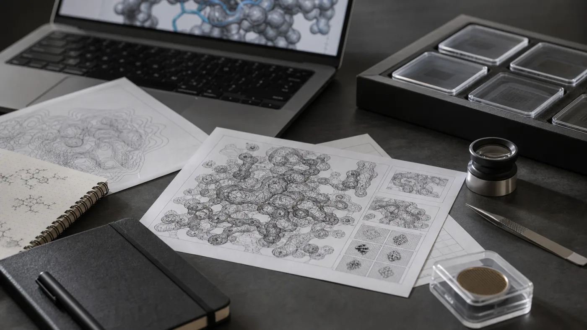

Biosynthetic routes
BioProspector
Explore target molecules, enzyme candidates, pathway ideas, and follow-up searches.
Open repoOpen research tools
AI agent tools for biological research.
We build open, readable tools that help scientists turn biological questions into agent-guided workflows they can run locally, review, and extend.
Each public repo gives a coding agent a defined place to start: instructions, examples, templates, and starter commands for a specific biological workflow.
The scientist stays close to the work: setting goals, choosing data sources, approving compute, and deciding what is useful.
Public repositories
Six public repositories cover the scientific workflows, this site, and the organization profile. Each gives a coding agent a clear place to begin and a local path a scientist can review.
Biosynthetic routes
Explore target molecules, enzyme candidates, pathway ideas, and follow-up searches.
Open repoGenome mining
Search public genomes and transcriptomes for natural-product pathways, candidate genes, and related clusters.
Open repoFermentation design
Prepare design families, scale context, and run packets for biomanufacturing experiments.
Open repo
Structural biology
Work through cryo-EM maps, models, figure planning, state comparison, and compute preparation.
Open repoPublic website
Keep the public site small, readable, and connected to the repositories it introduces.
Open repoOrganization profile
Maintain the organization profile, shared entry points, and public-facing repo index.
Open repoShared pattern
Run the first demo and keep the initial scope small enough to inspect.
Each repo carries instructions, examples, templates, and commands the agent can follow.
Public examples stay public; private data and larger artifacts stay in operator-owned storage.
Move to cloud, HPC, or GPU resources after the local path is clear enough to support the next step.
How to begin
README.md and AGENTS.md.